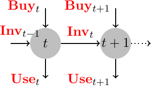
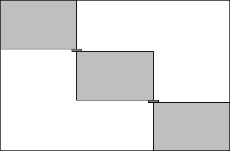

\(\newcommand{\R}{{\mathbb{R}}}\) \(\newcommand{\Z}{{\mathbb{Z}}}\) \(\newcommand{\N}{{\mathbb{N}}}\) \(\newcommand{\var}[1]{{\color{red}{\mathbf{#1}}}}\) \(\newcommand{\param}[1]{{\color{blue}{#1}}}\) \(\newcommand{\mathsc}[1]{{\normalfont\textsc{#1}}}\) \(\def\sc#1{\dosc#1\csod}\) \(\def\dosc#1#2\csod{{\rm{#1{\rm\small #2}}}}\) \(\newcommand{\set}[1]{{\sc#1}}\) \(\newcommand{\mathvar}[1]{\var{#1}}\) \(\newcommand{\half}{{\small{\frac{1}{2}}}}\)
5. Multi Period Models¶
Simple modes, like blending and product mix, form the basis for more complex model with wider applicability. Often those “static” models are turned into dynamic ones, by adding a temporal index to the main variables (how much to buy, to produce, to blend at each time period). Of course a simple replication of the same model over a time horizon is neither interesting nor challenging as, given the same data, its optimal solution will be the same for every period and there will be no dynamics in the model. What makes multi-period models interesting, as well as more computationally challenging as their size grows, is the set of constraints which link decisions taken in one period with decisions to be taken in different ones. In the following some examples will be presented.
- application
Purchase planning for a canteen
A fairly immediate generalization of the diet problem concerns purchase planning for multiple periods. In planning menus for multiple time periods, nutritional requirements can be guaranteed over a long time periods, like a week, through the standard model. However, decisions made on a certain day might influence decisions for other days. Consider, as an example, the total iron present in the diet: instead of imposing that at least 100% of the daily requirement is satisfied every day, it might be possible to allow each single day to provide less, say at least 60% of the daily requirement, with a constraint imposing to reach the correct total requirement, equal to 700% of the daily one, in a whole week. That is, letting \(t\) be the index associated to each day, and with \(\var{Fe}_t\) the quantity of iron in the diet of day \(t\), the daily constraint would take the form
\begin{align*} \var{Fe}_t & \geq 60 & \forall \, t \end{align*}while the weekly request could be expressed as
\begin{align*} \sum_{t = 1}^T \var{Fe}_t \geq T \cdot 100 \end{align*}(where, in the case of a week, \(T = 7\)). This way a link is introduced among decisions taken in different days.
Another example of a multi-period model in menu planning arises when quantity discounts are taken into account. Without considering now how to model piecewise linear cost functions, consider now the simple situation in which in some days prime material costs are lower than in others.
In these cases, in order to profit from lower costs in specific periods, it becomes necessary to distinguish between what is purchased every day and what is actually used for each day’s menu. When there is a difference between purchase and usage, this difference goes into an inventory and becomes available for the following periods.
In particular, denote by \(\var{Buy}_t, \var{Use}_t, \var{s}_t\) respectively the variables that indicate, for a given food, the quantity purchased at the end of period \(t\), the quantity used for preparing meals required in the period and the quantity available in the inventory at the end of the preceding period. The inventory balance equation is the following:
\begin{align*} \var{Buy}_t + \var{s}_{t-1} = \var{Use}_t + \var{s}_t. \end{align*}This constraint can be seen as a balance between inputs, or availability at the beginning of period \(t\) and outputs from the same periods. The following figure gives a graphical representation of this temporal link – later in this volume this will be recognized as a network flow model:

The inventory balance equation creates a link between the decisions made in period \(t\) and those that will be made in period \(t + 1\).
The following model represents a possible schema.
- model
Multiperiod menu planning
\(\set{Foods}\): set of available foods \(\set{Qual}\): qualities to be kept under control
\(\param{T}\): the time horizon;
\(\param{Cost}_j^t\): unit cost of food \(j \in \set{Food}\) in period \(t\)
\(\param{Hold}_{jt}\): unit inventory cost, to be paid for each unit of food \(j\) stored at the end of period \(t\)
\(\param{MinQual}_i, \param{MaxQual}_i\): minimum and maximum allowed for qualitative element \(i \in \set{Qual}\) in each period;
\(\param{TotMinQual}_i, \param{TotMaxQual}_i\): minimum and maximum requests for element \(i\) over the entire period \(1,\ldots, \param{T}\);
\(\param{Q}_{ij}\): quantity of nutrient \(i \in \set{Qual}\) contained in one unit of food \(j \in \set{Foods}\);
\(\var{Buy}_{jt}\): quantity of food \(j \in \set{Foods}\) to be purchased at the beginning of period \(t\);
\(\var{Use}_{jt}\): quantity of of food \(j\) to be used for the meals of period \(t\);
\(\var{s}_{jt}\) quantity of food \(j\) in the inventory at the end of period \(t\);
Daily diet quality:
\begin{align*} \param{MinQual}_i \leq \sum_{j \in \set{Food}} \param{Q}_{ij} \var{Use}_{jt} & \leq \param{MaxQual}_i & \forall \, i & \in \set{Qual}, \forall\,t \end{align*}Diet quality in the planning period:
\begin{align*} \param{TotMinQual}_i \leq \sum_{j \in \set{Food}} \param{Q}_{ij} \sum_{t=1}^T \var{Use}_{jt} & \leq \param{TotMaxQual}_i & \forall \, i & \in \set{Qual} \end{align*}Inventory balance:
\begin{align*} \var{Buy}_{jt} + \var{s}_{jt-1} & = \var{Use}_{jt} + \var{s}_{jt} & \forall \, j & \in \set{Food}, t \in 1,\ldots,T \end{align*}Non negativity:
\[ \var{Use}_{jt}, \var{Buy}_{jt}, \var{s}_{jt} \geq 0 \]Observe, in particular, the non-negativity constraint of the inventory: from the inventory balance equation it immediately follows that
\[ \var{Buy}_{jt} + \var{s}_{jt} \geq \var{Use}_{jt} \]thus everything needed for day \(t\) is always already available at the beginning of the period, either form newly bought food or from the inventory. Thus, non negativity of the inventory is the key to guarantee that enough supply needs to be available to satisfy all of the demand.
A possible objective function might be:
\[ \min \sum_{j \in \set{Foods}}\sum_{t=1}^T \left( \param{Cost}_j^t \var{Buy}_{jt} + \param{InvCost}_{jt} \var{s}_{jt} \right) \]
- application
Aggregate production planning
Assume that a company needs to plan production and workforce levels for a given time period, based on demand forecast. We assume that either a single product is planned, or in any case requirements are expressed, e.g., in FTE (Full Time Equivalent) units of measurement.
As in standard product mix problems, the quantity of resources needed is assumed to be given; assume also there is the possibility of hiring staff or to have a limited amount of overtime in each period planning horizon. We wish to formulate a model for production planning, labor requirements, hiring, in order to minimize the total cost.
This is an example of multi-period planning: decisions made today regarding production and staff levels will possibly affect decisions to be taken in subsequent periods. We recall here the basic inventory balance equation:
While the above equation is associated to inventory (finished goods, prime material, …) it can be seen that a similar equation will be needed for staff level: in this case \(\var{In}\) and \(\var{Out}\) represent the quantity of staff hired or laid off during a period, while \(\var{s}\) denotes the staff level.
Aggregate production planning for a single product
\(\set{ProdType}\): production modes: regular, overtime, external
\(\param{T}\): the planning horizon;
\(\param{ProductCost}_p\): total cost, inclusive of labor and cost of raw materials, required to produce one unit using production mode \(p \in \set{ProdType}\);
\(\param{RegularCost}\): cost for one hour of regular work Regular wages are paid, independently on the quantity produced. It is thus possible that part of the production capacity is not used;
\(\param{MaxProd}_p\): maximum production in a single period using production mode \(p \in \set{ProdType}\);
\(\param{InitialInv}\): initial level of the inventory;
\(\param{FinalInv}\): required level of the inventory at the end of the planning period;
\(\param{InvCost}\): inventory cost (for one unit, for one time period);
\(\param{Cap}\): maximum inventory capacity;
\(\param{Demand}_t\): (known) demand for the product in period \(t \in 1,T\)
\(\param{InitialStaff}\): initial staff level
\(\param{FinalStaff}\): required final staff level
\(\param{MaxRegProd}\): maximum production in a single period by a regular work unit
\(\param{HireCost}\): cost for hiring one unit
\(\param{LayoffCost}\): cost for laying off one unit of workforce
\(\var{Prod}_{t, p}\): quantity to be produced in period \(t\) with production type \(p\in \set{ProdType}\)
\(\var{s}_t\): inventory level at the end of period \(t\)
\(\var{Hire}_t\): number of worker units hired at the beginning of period t
\(\var{Layoff}_t\): number of workers laid off at the beginning of period \(t\)
\(\var{Work}_t\): number of workers available in period \(t\)
Non-negativity for all variables (and, usually, integrality);
Inventory capacity: \(0 \leq \var{s}_t \leq \param{Cap}\)
Inventory balance:
\[ \sum_{p \in \set{ProdType}} \var{Prod}_{t, p} + \var{s}_{t-1} = \var{s}_t + \param{Demamnd}_p \]When \(t=1\), in the equation \(\var{s}_{t-1}\) needs to be replaced by \(\param{InitialInv}\)
Final inventory
\[ \var{s}_{T} = \param{FinalInv} \]
Workforce balance:
\[ \var{Work}_t = \var{Work}_{t-1} + \var{Hire}_t - \var{Layoff}_t \]where, as in the inventory balance, in the first period \(\var{work}_0\) should be substituted by \(\param{InitialStaff}\)
Final workforce level
\[ \var{Work}_{T} = \param{FinaStaff} \]production limit:
\[ \var{Prod}_{t, p} \leq \param{MaxProd}_p \]for every \(p \in \set{ProdType}\) except regular production type, for which a separate constraint is given, and each period \(t\)
Maximum production limit on regular hours:
\[ \var{Prod}_{t, Regular} \leq \var{Work}_t \param{MaxProd}_{Regular} \]for \(t =1,T\).
The objective function is composed of the cost for overtime and for external production, the inventory cost and the cost for hiring and laying off; the cost for regular production depends on the staff level.
\begin{align*} \min & \sum_{t \in 1,T} ( \sum_{p \in \{Overtime, External \}} \param{ProdCost}_p \var{Prod}_{t, p} \\ & + \param{RegularCost} \var{Work}_t * \param{MaxRegProd} \\ & + \param{InvCost} \var{s}_t \\ & + \param{HireCOst} \var{Hire}_t + \param{LayoffCost} \var{Layoff}_t ) \end{align*}
As an example, consider the data contained in the following file:
# Aggregate production planning example
param T := 12; # Planning Period
set PRODTYPE := Regular Overtime External;
param: ProdCost MaxProd:=
Regular 3.5 4000
Overtime 3.7 15000
External 4.2 5000
;
param RegularCost := 0.525;
# regular workforce cost (Euro) for a single product
param InvCost := 0.28;
# inventory cost per product per period
param HireCost := 1000; # hiring cost (Euro)
param LayoffCost := 600; # cost for laying off
param InitialInv := 30000;
param Demand:=
1 70000
2 150000
3 320000
4 100000
5 300000
6 350000
7 250000
8 2000
9 50000
10 120000
11 130000
12 100000;
# demand per period
# initial workforce level
param InitialStaff := 30;
# Aggregate production planning example
T = 12 # Planning Period
PRODTYPE= ["Regular", "Overtime", "External"]
ProdCost = JuMP.Containers.DenseAxisArray([
3.5;
3.7;
4.2],
PRODTYPE)
RegularCost = 0.525
# regular workforce cost (Euro) for a single product
InvCost = 0.28
# inventory cost per product per period
HireCost = 1000; # hiring cost (Euro)
LayoffCost = 600; # cost for laying off
MaxProd = JuMP.Containers.DenseAxisArray([
4000;
15000;
5000],
PRODTYPE)
InitialInv = 30000
FinalInv = 30000
Demand = [
70000
150000
320000
100000
300000
350000
250000
2000
50000
120000
130000
100000]
# numero di prodotti venduti in ogni periodo
# initial workforce level
InitialStaff = 30
# final workforce level
FinalStaff = 30
It may be interesting to compare the optimal plan obtained through our proposed model, with greedy (or myopic) plans computed through two classical aggregate production planning strategies, the level and the chase strategies. In a level strategy the workforce level is kept constant during the whole period, with, possibly, a single level change at the initial period. The optimal level can be quite easily found with simple enough ad-hoc strategies; in order to compare with the optimal one, we may choose to obtain a level strategy adding the constraint
An alternative level strategy might also be considered in which the total production is constant.
In a chase strategy instead the production in each period exactly matches the demand. In in this case the inventory, with the only possible exceptions in the first and last periods, will always be empty. This strategy can be extremely easily solved - the use of a model is superfluous in this case. However, in order to automate the procedure, in the following models we include two constraints which, if activated, lead to level or chase strategies.
#------------------------------------------------------#
# aggregate production planning #
#------------------------------------------------------#
param T; # Planning Period
set PRODTYPE;
param ProdCost{PRODTYPE};
param MaxProd{PRODTYPE} default Infinity;
param RegularCost;
# regular workforce cost (Euro) for a single product
param InvCost; # inventory cost per product per period
param HireCost; # hiring cost (Euro)
param LayoffCost; # cost for laying off
param InitialInv;
param FinalInv;
param Demand{1..T}; # demand per period
# initial workforce level
param InitialStaff;
# final required workforce level
param FinalStaff;
var Prod{1..T, PRODTYPE} >=0, integer;
var Inv{0..T}, >=0;
var Hire{1..T} >=0, integer;
var Layoff{1..T} >=0, integer;
var Staff{0..T} >= 0;
minimize TotalCost :
sum{t in 1..T, p in PRODTYPE diff {"Regular"}} (ProdCost[p] * Prod[t,p])
+ sum{t in 1..T} (RegularCost * Staff[t] * MaxProd["Regular"] + InvCost * Inv[t]
+ HireCost * Hire[t] + LayoffCost * Layoff[t] ) ;
s.t. inventory_balance{t in 1..T}:
Inv[t] + Demand[t] = Inv[t-1] + sum {p in PRODTYPE} Prod[t,p];
s.t. initialInv:
Inv[0] = InitialInv;
s.t. workforce{t in 1..T}:
Staff[t-1] + Hire[t] = Staff[t] + Layoff[t];
s.t. initialWorkforce:
Staff[0] = InitialStaff;
s.t. productionLimit{t in 1..T, p in PRODTYPE: p != "Regular"}:
Prod[t,p] <= MaxProd[p];
s.t. regularProdutionLimit{t in 1..T}:
Prod[t,"Regular"] <= Staff[t]*MaxProd["Regular"];
#======= additional constraints for level and chase, only for teaching purpose =======
s.t. Level{t in 2..T}: #additional constraint to impose a level staff plan
Staff[t] = Staff[t-1];
s.t. Chase{t in 1..T}: #additional alternative constraint to impose a chase strategy
Staff[t] = ceil(Demand[t] / MaxProd["Regular"]);
# the above constraints are initialy not imposed:
drop Level;
drop Chase;
# to be done
When solving the example with the three strategies, (the optimal, best level and chase ones) we obtain the following result:
Aggregate Production Results
~~~~~~~~~~~~~~~~~~~~~~~~~~~~~~
Optimal Plan solved
~~~~~~~~~~~~~~~~~~~~~~~~~~~~~~
Total cost in 12 periods: 1221060 Euro
t Prod
Regular Overtime External
1 118000 0 0
2 144000 0 0
3 248000 0 0
4 248000 0 0
5 252000 0 0
6 252000 0 0
7 248000 0 0
8 26000 0 0
9 28000 0 0
10 124000 0 0
11 124000 0 0
12 100000 0 0
t Inv Demand Staff Hire Layoff Unused
1 78000 70000 30 0 0 2000
2 72000 150000 36 6 0 0
3 0 320000 62 26 0 0
4 148000 100000 62 0 0 0
5 100000 300000 63 1 0 0
6 2000 350000 63 0 0 0
7 0 250000 62 0 1 0
8 24000 2000 7 0 55 2000
9 2000 50000 7 0 0 0
10 6000 120000 31 24 0 0
11 0 130000 31 0 0 0
12 0 100000 25 0 6 0
~~~~~~~~~~~~~~~~~~~~~~~~~~~~~~
Level Plan solved
~~~~~~~~~~~~~~~~~~~~~~~~~~~~~~
Total cost in 12 periods: 1665920 Euro
t Prod
Regular Overtime External
1 214000 0 0
2 216000 0 0
3 216000 0 0
4 216000 0 0
5 216000 0 0
6 216000 0 0
7 216000 0 0
8 2000 0 0
9 50000 0 0
10 120000 0 0
11 130000 0 0
12 100000 0 0
t Inv Demand Staff Hire Layoff Unused
1 174000 70000 54 24 0 2000
2 240000 150000 54 0 0 0
3 136000 320000 54 0 0 0
4 252000 100000 54 0 0 0
5 168000 300000 54 0 0 0
6 34000 350000 54 0 0 0
7 0 250000 54 0 0 0
8 0 2000 54 0 0 214000
9 0 50000 54 0 0 166000
10 0 120000 54 0 0 96000
11 0 130000 54 0 0 86000
12 0 100000 54 0 0 116000
~~~~~~~~~~~~~~~~~~~~~~~~~~~~~~
Chase Plan solved
~~~~~~~~~~~~~~~~~~~~~~~~~~~~~~
Total cost in 12 periods: 1281100 Euro
t Prod
Regular Overtime External
1 40000 0 0
2 150000 0 0
3 320000 0 0
4 100000 0 0
5 300000 0 0
6 350000 0 0
7 250000 0 0
8 2000 0 0
9 50000 0 0
10 120000 0 0
11 130000 0 0
12 100000 0 0
t Inv Demand Staff Hire Layoff Unused
1 0 70000 18 0 12 32000
2 0 150000 38 20 0 2000
3 0 320000 80 42 0 0
4 0 100000 25 0 55 0
5 0 300000 75 50 0 0
6 0 350000 88 13 0 2000
7 0 250000 63 0 25 2000
8 0 2000 1 0 62 2000
9 0 50000 13 12 0 2000
10 0 120000 30 17 0 0
11 0 130000 33 3 0 2000
12 0 100000 25 0 8 0
# to be done
As expected, both the level and the chase strategy produce a plan whose cost is significantly higher than the one obtained through the optimal plan. As a side notice, please observe that this is not a linear optimization problem, but a mixed integer linear optimization one, as some variables, like the staff level, are constrained to assume integer values only. By the way, imposing the integrality of the number of hired or laid off personnel units and requiring that the initial staff level is integer, we obtain the integrality of the staff level even without imposing it.
Although integrality is usually a very expensive constraint, i.e. a constraint which quite often makes a model extremely difficult or even impossible to solve in reasonable time, in this case the solution was found extremely quickly. It can be observed also that, although the computational effect of imposing integrality is in general very strong, from a purely syntactic point of view asking a variable to assume only integer values is very easy in modern modeling languages.
Another, quite similar, application is based on cash flow management.
- application
Multiperiod financial planning
In this application we will consider an elementary, deterministic, portfolio management problem. Consider the situation in which an investor has a known plan of revenues (e.g., wages) and expenses for a given time horizon. Assume also that the investor might choose to buy some debt securities, like treasury bonds; these are financial instruments which guarantee a fixed, pre-determined, interest rate either periodically or in a unique solution when they get reimbursed.
The following data file includes an elementary example.
invest.dat¶param T := 24; param expenses := 4 6800 11 5800 16 5800 23 5800 ; param income := 1 2000 2 2000 3 2000 4 2000 5 2000 6 2000 7 2000 8 2000 9 2000 10 2000 11 2000 12 2000 13 2000 14 2000 15 2000 16 2000 17 2000 18 2000 19 2000 20 2000 21 2000 22 2000 23 2000 24 2000 ; param StartCash := 4000; param MinCash := 3000; set INVEST := Cert-1 Cert-3 Cert-6 Cert-12; param: life nominal := Cert-1 1 1.20 Cert-3 3 1.31 Cert-6 6 1.41 Cert-12 12 1.6 ;invest.dat¶T = 24 expenses = zeros(T) expenses[4] = 6800 expenses[11] = 5800 expenses[16] = 5800 expenses[23] = 5800 income = zeros(T) for t in 1:T income[t]= 2000 end StartCash = 4000 MinCash = 3000 INVEST = ["Cert-1" "Cert-3" "Cert-6" "Cert-12"] invest_data = JuMP.Containers.DenseAxisArray([ 1 1.20; 3 1.31; 6 1.41; 12 1.6; ], INVEST, ["life" "nominal"])In the file we included a fixed salary, a periodic expense (e.g., a home loan), a minimum required level of the cash at the end of every month. In the example data there are 4 investment options, in fixed income instruments with 1, 3, 6, 12 months life. A title with a life of \(d\) months with nominal yearly rate \(r\) will produce an interest which will be paid, together with the invested capital, \(d\) months after the purchase. The interest to be paid is computed as follows: a monthly bond with a nominal interest \(r\) will produce \(r/12\) as the interest after one month, while a three-months bond will produce \(r \times 3/ 12 = r/4\) as the interest after three moths from the investment. In general, an investment of \(Q\) euro in a bond with life \(d\) months and nominal yearly interest rate \(r\) will produce, after \(d\) months, an interest equal to \(Q \cdot \frac{d}{12} \cdot \frac{r}{100}\).
Now the problem can be formally posed as that of determine the amount of each bond to be purchased in each month to satisfy the constraints on minimum cash, which, if non negative, also guarantees enough liquidity to be available for all the required expenses.
As an example of a possible objective function, here we assume we wish to maximize the total amount of interest received. Take into account the fact that this has the negative effect of concentrating much of the investments in order to produce a large final cash at the end of the optimization period, which is not usually a desirable situation. However, this is due to the fact that in planning with a finite horizon we are assuming that at the end of the period everything should be available as cash. This border effect might be mitigated in many different ways, choosing a more suitable objective function. A possibility might be that of considering a rolling-horizon approach, in which a long term plan, say 5 years, is prepared and a much shorter plan is actually implemented. As an example, we might wish to follow the plan for one year, after which we re-run the model for the following 5 years and so on. Another possibility is to apply a discount factor to future cash flow, based e.g. on the inflation rate, so that the same amount of money has different value depending on how far in the future it will be available.
The following model implements a basic investment exercise.
invest.mod¶#------------------------------------------------------# # financial planning # #------------------------------------------------------# set INVEST; # investment options param T; # time horizon param expenses{1..T} default 0; # payments in the period param income{1..T} default 0; # revenues in the period param StartCash; # initial available cash param MinCash default 0; # minimum desired cash level param life{INVEST}; # number of periods before capital reimbursement param nominal{INVEST}; # nominal interest rate var Buy{INVEST, 1..T} >=0; # amount to invest var Cash{0..T} >= MinCash; # cash level at the end of each period var Reimburse{1..T} >= 0; # reimbursement of past investments maximize TotalInterest: sum {t in 1..T} sum {i in INVEST: life[i] < t} (Buy[i,t-life[i]] * nominal[i] * life[i] / 1200.); s.t. Start: Cash[0] = StartCash; s.t. CashFlow{t in 1..T}: Cash[t-1] + income[t] + Reimburse[t] = Cash[t] + expenses[t] + sum{i in INVEST} Buy[i,t]; s.t. interestCalculation{t in 1..T}: Reimburse[t] = sum {i in INVEST: life[i] < t} (Buy[i,t-life[i]] * (1. + nominal[i] * life[i] / 1200.));invest.jl¶#------------------------------------------------------# # finanical planning # #------------------------------------------------------# function financialPlanning(model::Model, datafile::String) include(datafile) @variable(model, Buy[INVEST, t in 1:T] >=0) ; @variable(model, Cash[t in 0:T] >= MinCash) # cash level at the end of each period @variable(model, Reimburse[t in 1:T] >= 0) @objective(model, Max, sum(Buy[i,t-Int(invest_data[i,"life"])] * (invest_data[i,"nominal"] * invest_data[i,"life"] / 1200. ) for t in 1:T, i in INVEST if invest_data[i,"life"] < t)) @constraint(model, Start, Cash[0] == StartCash) @constraint(model, CashFlow[t in 1:T], Cash[t-1] + income[t] + Reimburse[t] == Cash[t] + expenses[t] + sum(Buy[i,t] for i in INVEST)) @constraint(model, interestCalculation[t in 1:T], Reimburse[t] == sum(Buy[i,t-Int(invest_data[i,"life"])] * (1. + invest_data[i,"nominal"] * invest_data[i,"life"] / 1200. ) for i in INVEST if invest_data[i,"life"] < t)) endThe solution of this model can be presented by listing, month by month, the situation of purchases, of the cashier, of the interest paid:
Buy [*,*] (tr) : Cert-1 Cert-12 Cert-3 Cert-6 := 1 0 0 3000 0 2 232.391 0 1767.61 0 3 1788.39 0 0 444.237 4 0 0 0 0 5 0 0 0 3773.4 6 0 0 0 2000 7 0 0 2000 0 8 2000 0 0 0 9 0 4449.37 0 0 10 0 4006.55 0 0 11 0 0 0 0 12 0 4014.1 0 0 13 0 0 2000 0 14 2000 0 0 0 15 1791.66 0 0 2210.34 16 0 0 0 0 17 0 0 0 2000 18 0 0 0 2000 19 0 0 2000 0 20 0 0 2000 0 21 0 0 8746.48 0 22 8077.2 0 0 0 23 8305.93 0 0 0 24 25181.8 0 0 0 ; : Cash Reimburse expenses income := 0 4000 . . . 1 3000 0 0 2000 2 3000 0 0 2000 3 3000 232.624 0 2000 4 3000 4800 6800 2000 5 3000 1773.4 0 2000 6 3000 0 0 2000 7 3000 0 0 2000 8 3000 0 0 2000 9 3000 2449.37 0 2000 10 3000 2006.55 0 2000 11 3000 3800 5800 2000 12 3000 2014.1 0 2000 13 3000 0 0 2000 14 3000 0 0 2000 15 3000 2002 0 2000 16 3000 3800 5800 2000 17 3000 0 0 2000 18 3000 0 0 2000 19 3000 0 0 2000 20 3000 0 0 2000 21 3000 6746.48 0 2000 22 3000 6077.2 0 2000 23 3000 12105.9 5800 2000 24 3000 23181.8 0 2000 ;It can be observed, from the example above, that the final cash is almost always exactly equal to the required minimum, as all excess liquidity is immediately invested. The only exception is the cash at the end of period 24. It is also possible to see how different investment options are used, taking into account forecasted expenses.
This simple example produces a feasible financial plan with a total amount of paid interests equal to 381.79. It might be notices that, however, this strategy might not be feasible, as it is not possible to buy fractions of a bond. Even more, usually bonds can be acquired only in integer multiples of, say, 1000 euro. This additional constraint is easily imposed, but the underlying model is no more a pure linear optimization one as it requires integer variables which, in general, make the solution much harder to find and to certify. Running the integer variant of this model in which we assume that bonds can be bought in multiples of 1000 euro, after a few minutes of computation we stopped the algorithm and obtained the following solution.
Buy [*,*] (tr) : Cert-1 Cert-12 Cert-3 Cert-6 := 1 0 0 3 0 2 0 0 2 0 3 2 0 0 0 5 2 0 0 2 6 0 0 0 4 7 2 0 0 0 8 4 0 0 0 9 0 6 0 0 10 2 0 0 0 12 0 6 0 0 13 0 0 2 0 14 2 0 0 0 15 2 0 0 2 17 0 0 0 2 18 0 0 0 2 19 0 0 2 0 20 0 0 2 0 21 0 0 10 0 22 4 0 0 0 23 5 0 0 0 ; : Cash Reimburse expenses income := 0 4000 . . . 1 3000 0 0 2000 2 3000 0 0 2000 3 3000 0 0 2000 4 3211.83 5011.82 6800 2000 5 3218.38 2006.55 0 2000 6 3220.38 2002 0 2000 7 3220.38 0 0 2000 8 3222.38 2002 0 2000 9 3226.38 4004 0 2000 10 3226.38 0 0 2000 11 3442.48 4016.1 5800 2000 12 3470.68 4028.2 0 2000 13 3470.68 0 0 2000 14 3470.68 0 0 2000 15 3472.68 2002 0 2000 16 3681.23 4008.55 5800 2000 17 3681.23 0 0 2000 18 3681.23 0 0 2000 19 3681.23 0 0 2000 20 3681.23 0 0 2000 21 3791.33 8110.1 0 2000 22 3797.88 2006.55 0 2000 23 3022.53 8024.65 5800 2000 24 28170.4 23147.8 0 2000 ; TotalInterest = 370.375This solution is more acceptable then the previous one and grants a total interest of 370.375 euro, thus showing that constraints (like the integrality requirement) come with a cost (which in this case is roughly 0.03% of the previous one). This is not a certifiably optimal solution as the solver was artificially stopped before convergence. The solver however was able to certify that no solution with value better than 371.01204 might exist for this example.
From the point of view modeling, the most important aspect of this application is the formulation of the cash balance equation:
\begin{align*} \var{Cash}_t & = \var{Cash}_{t-1} + \param{revenues}_t + \var{Reimburse}_t \\ & - \param{expenses}_t- \sum_{inv} \var{Buy}_{inv,t} \end{align*}The model for each single period consists of the definition of reimbursement:
\begin{align*} \var{Reimburse}_t & = \sum_{inv \in \set{INVEST} : t > \param{Duration}(inv)} \var{Buy}_{inv, t- \param{Duration}(inv)} (1. + \param{InterestRate}_{inv}) \end{align*}The balance equation link variables related to the current period with variables related to previous periods through the return of the investments. The equation for reimbursement (actually not strictly needed, but useful for the sake of clarity) states that at time \(t\) we will obtain back what invested \(\param{Duration}\) periods before plus the interest associated to that investment. The objective function we used here is equal to the formula of reimbursement, except that we do not account for the capital reimbursement, but just for the interest gained. In practice, the “1. +” term above is omitted.
In more elaborate cash flow models, even without going to stochastic models, several variants and extensions are possible. Sometimes, when buying, some extra expenses and fees are to be paid, some of which are proportional to the purchased amount, while others are fixed charges. A bank might require, as an example, 0.1% of the investment plus a fixed charge of 5€ per operation. While the first fee is easy to account for, the second one, of a discrete nature, requires the introduction of binary variables: fixed charge models will be analyzed and modeled in the section devoted to the Fixed Charge problem.
Sometimes also cash grants a tiny interest, which can be easily taken into account; sometimes, however, when the cash is allowed to go negative, a different, much higher in absolute value, “negative” interest rate is paid. This piecewise linear cost function associated to cash can be quite easily modeled in this case - how to do this will be explained in the section on Minimax models. The minimum level of cash might be easily imposed, even if negative. However, sometimes, banks apply an even more subtle, and difficult to model, penalty: a fixed interest rate is applied to the minimum value of the cash during a period (e.g., one year), if that minimum is negative. So, for example, if the cash has always been positive except during, say, two periods, when it was -5€ and -100€, not only a negative interest will be paid for the -5 and the -100 cash values, but also a different penalty will be applied to the -100 value only, disregarding how long was the cash at that level. Modeling this is more challenging and will not be dealt with here.
The structure of many multi-period problems is that of a set of models, even quite complex ones, related to a single period, linked through a few variables and constraints which span different time periods and connect decisions taken in different time instants. An example was the cash flow application above, where the cash balance equations link each period with the immediately preceding one, exactly as the inventory balance in previous models. In the cash flow example the link is to more than one period, thanks to the reimbursement of bonds. Quite often the link between different periods is “weak”, involving only a few variables over contiguous time periods, or a tiny number of constraints. If we explicitly represented the coefficient matrix of the variables, a rather sparse matrix would be obtained (that is, with a low percentage of non-null elements); typically this coefficient matrix will be almost block diagonal. Each block would correspond to equations and variables related to a single period model, with just a few lines whose coefficients belong to different blocks. Graphically this situation might be similar to that shown in the following figures.


Models of this kind frequently reach huge dimensions; cosnider, as an example, a multi-period version of the Aluminum blending problem. Assume each day we can chose among, say, among 50 scrap types and that we wish to take under control 15 chemical elements. If we plan for one year, the variables of the problem become \(365 \times 50 = 18\,250\) and the constraints at least 5475, plus the inventory balance equations. This is not considered a large scale linear optimization problem, but it is easy to imagine how more complex probem may grow in dimension when cast into a multi-period scenario.
Even when the size of these problems gets huge, however, it is possible to build algorithms which take advantage of the particular structure of the constraint matrix, in particular its sparsity and its block structure. Just to name one of the most well known methods, Bender’s decomposition method [6] is particularly well suited for these cases; details on these kinds of methods are out of scope in this volume; we just recall that they consist of cycles of “external” iterations, during which tentative values are assigned to the variables which link different blocks, followed by “internal” iterations, during which the individual subproblems associated to each block are solved separately, possibly exploiting parallel computing.